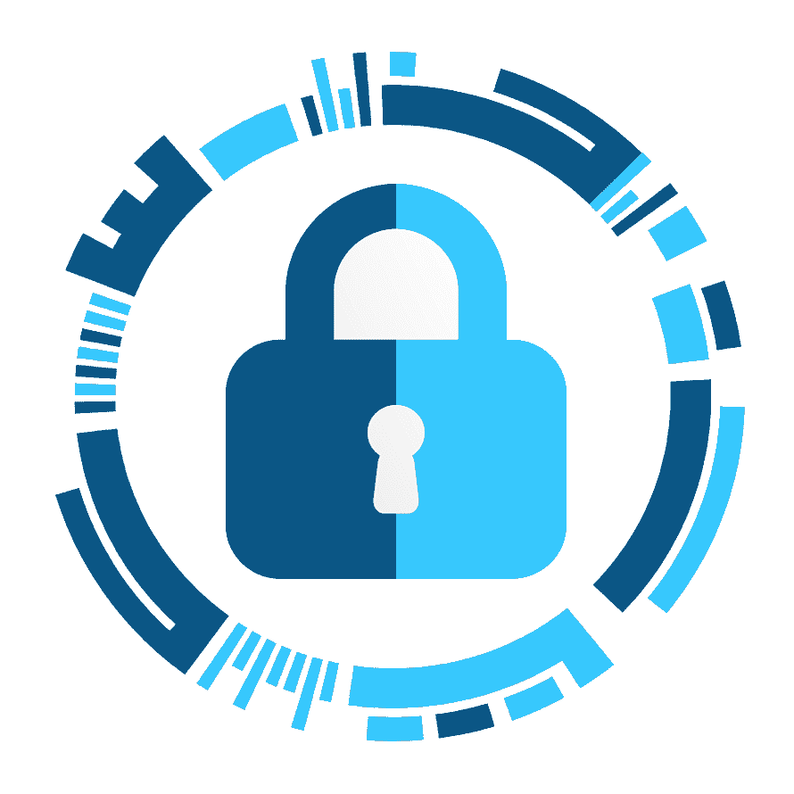
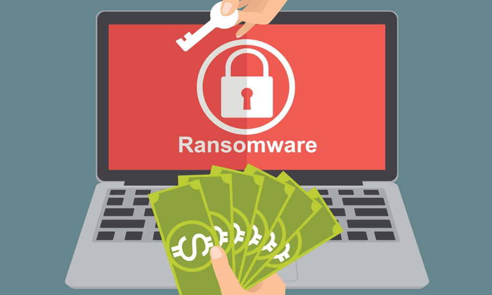
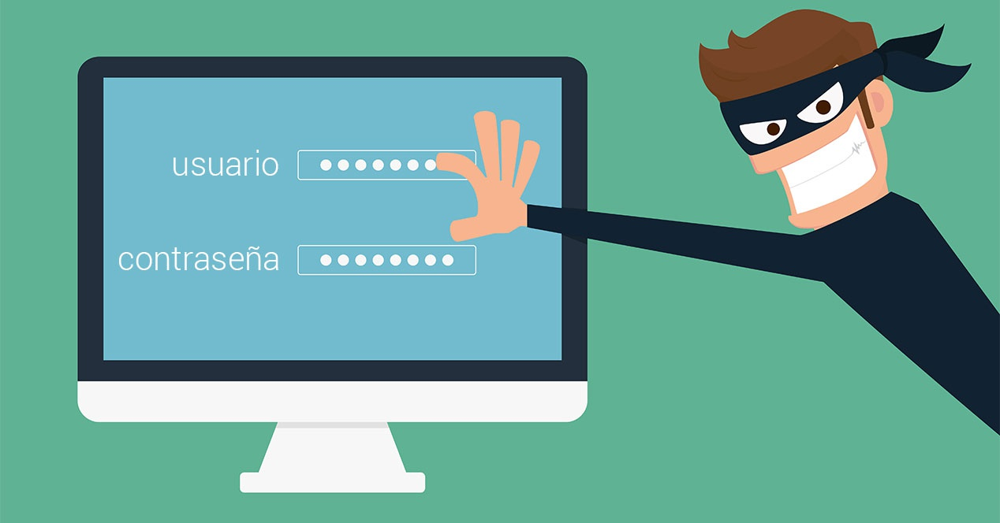
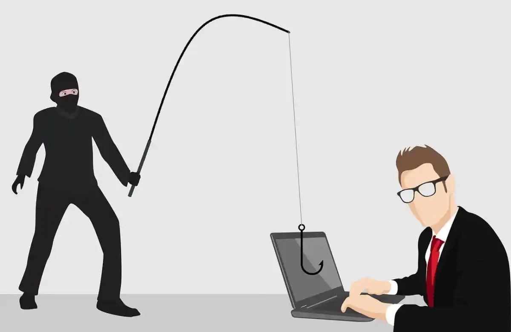
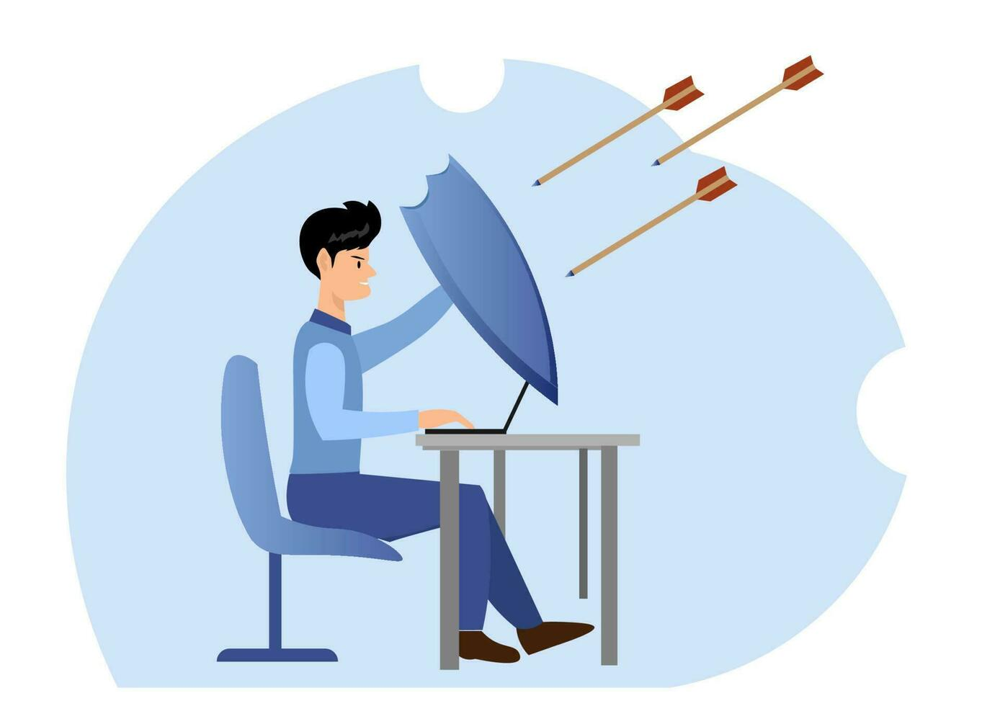

Phishing
El phishing utiliza correos, mensajes o páginas falsas que imitan a bancos, redes sociales o empresas conocidas. Su objetivo es convencerte de ingresar tu usuario, contraseña o información bancaria en un sitio controlado por el atacante.

SecureNet Volver al inicioCentro de aprendizaje
Conocer los riesgos digitales es el primer paso para evitar problemas. Revisa estos tres temas y aplica sus recomendaciones.
Un ataque informático es una acción que busca entrar, dañar o controlar un dispositivo, una cuenta o una red sin autorización. Estos ataques pueden comenzar con un correo, un mensaje, un archivo o una página web que parece legítima.
El phishing es uno de los métodos más comunes: el atacante se hace pasar por una empresa o persona conocida para obtener contraseñas. También existen amenazas como el ransomware, que bloquea los archivos y exige un pago, y el robo de contraseñas mediante páginas falsas.
El phishing utiliza correos, mensajes o páginas falsas que imitan a bancos, redes sociales o empresas conocidas. Su objetivo es convencerte de ingresar tu usuario, contraseña o información bancaria en un sitio controlado por el atacante.

El ransomware es un programa malicioso que bloquea o cifra los archivos de un dispositivo. Después, los atacantes exigen dinero para intentar recuperar el acceso, aunque pagar no garantiza que los archivos sean devueltos.

El robo de contraseñas ocurre cuando alguien obtiene tus claves mediante páginas falsas, programas maliciosos o contraseñas repetidas que ya fueron filtradas. Con esos datos puede entrar a tus cuentas, hacerse pasar por ti o acceder a información privada.
También debes conocerlos

02Los fraudes digitales son engaños diseñados para obtener dinero, información personal o acceso a tus cuentas. Pueden aparecer en redes sociales, correos electrónicos, llamadas telefónicas, tiendas falsas o mensajes de texto.
Normalmente, el estafador intenta provocar una reacción rápida usando miedo, urgencia o una oferta atractiva. Antes de responder, verifica quién envía el mensaje, revisa la dirección del sitio web y evita compartir códigos, contraseñas o datos bancarios.

03La prevención consiste en adoptar hábitos que reduzcan las posibilidades de sufrir un ataque o un fraude. La seguridad no depende de una sola herramienta, sino de varias decisiones responsables al utilizar internet.
Utiliza contraseñas largas y diferentes, activa la verificación en dos pasos y mantén actualizado el sistema operativo. Además, realiza copias de seguridad y piensa antes de abrir enlaces o descargar archivos que no esperabas recibir.